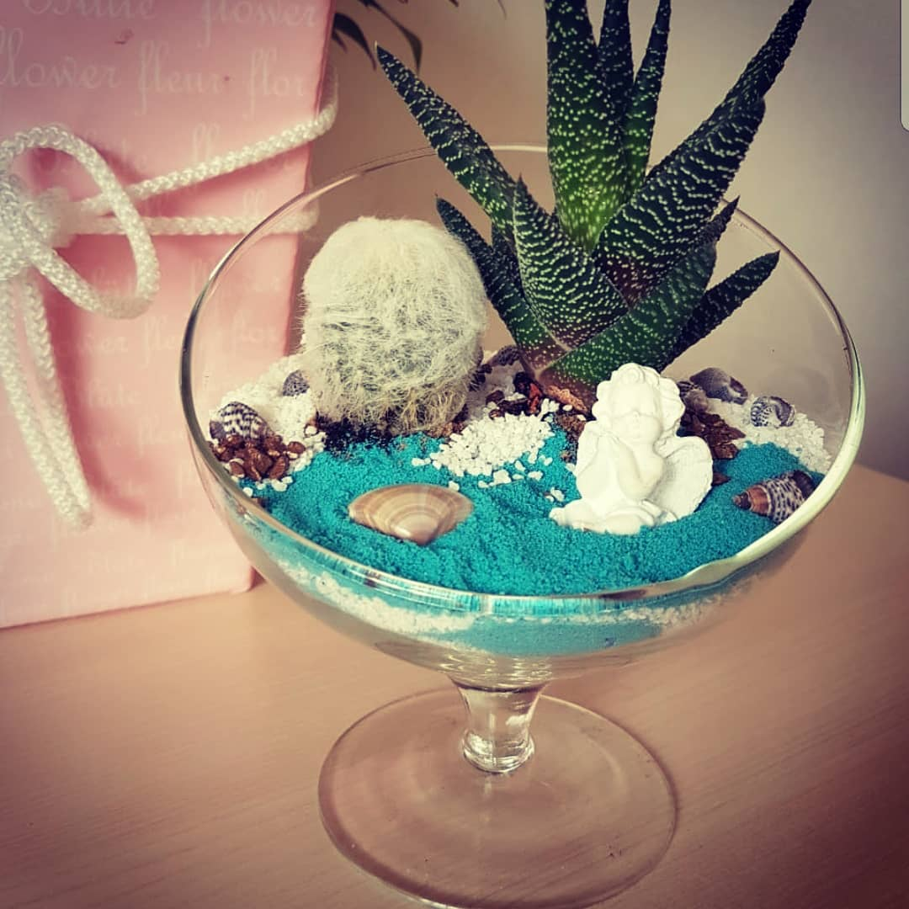

Флорариум "Сон в летнюю ночь"
Описание товара
Флорариум — это самый оригинальный и неповторимый подарок к новому году и любому празднику. Каждая работа выполнена индивидуально и с большой любовью. Вы дарите близким не только комнатное растение, которое не требует большого ухода, но и стильное украшение любого интерьера. Цветочная композиция будет долго радовать глаз и напоминать о дальних экзотических странах.
| № п/п | Харрактеристики товара | Значения | |
|---|---|---|---|
| 1 | Размер композиции | 16 x 19 см | 20 x 24 см |
| 2 | Материал вазы | стекло | камень |
| 3 | Наполнение | суккуленты, песок, декоративные элементы | кактусы, цветочный грунт, подсветка |
Харрактеристики товара
- Размер композиции: 16 x 19 см.
- Материал вазы: стекло.
- Наполнение: суккуленты, кактусы, цветочный грунт, песок, декоративные элементы.
Подробное описание товара
Флорариум — это террариум с растениями, ультракомпактный сад, не требующий особого
ухода.
Прозрачное стекло обеспечивает поступление необходимого растениям света. А конструкция этих мини-садов
создается такой, чтобы внутри формировалась нужная влажность. Но самое важное — это растения,
которые находятся внутри. Они должны быть миниатюрными и неприхотливыми.
К таким видам относятся суккуленты — миниатюрные орхидеи, кактусы, фиттония, пилея
и множество других. Эта группа растений имеет специальные ткани и механизмы для запаса воды.
Домашние суккуленты практически не требует воды и растут очень медленно, так что не придется
беспокоиться об их содержании или пересаживании в другую емкость.
С заботой о вашем подарке
Каждый флорариум и набор упаковываются в фирменную коробку с ручками. Внутри бумажный наполнитель. Мы позаботились о том, чтобы ваш подарок выглядел презентабельно. К каждому флорариуму прилагается инструкция по уходу за растениями в конверте.